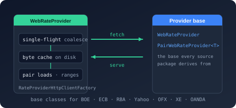

Bodu.Financial.ExchangeRates

Bodu.Financial.ExchangeRates is the web-provider infrastructure package of the Bodu.Financial family - the layer every live exchange-rate feed is built on. It ships the two abstract provider bases (WebRateProvider for feeds that publish one base currency in bulk, PairWebRateProvider<TSeries> for feeds queried one currency pair at a time), the shared WebRateProviderOptions, and the fetch machinery those bases share: single-flight request coalescing, an on-disk raw-response cache, HttpClient construction, and the pair-load contracts. Eleven per-source packages - the Bank of England, the European Central Bank, the Reserve Bank of Australia, Yahoo Finance, OFX, XE.com, OANDA, Fixer, exchangerate.host, FRED, and the IMF - sit on top, each isolating one feed's HTTP and parsing dependencies. Part of the Numerics & Financial topic.
Bodu.Financial.ExchangeRates is a Stable package.
It depends only on Bodu.Financial, Bodu.Core, and Microsoft.Extensions.Logging.Abstractions; the core FX contracts, value types, and in-memory providers it implements live in the core Bodu.Financial package, which carries no HTTP machinery at all.
Core mental model
A web provider materializes a remote feed into an immutable in-memory snapshot and answers every lookup from that snapshot. Warm the snapshot first - by date range, by pair, or by feed - then resolve rates through the standard IDatedRateProvider surface. The asynchronous getters warm on demand; the synchronous getters resolve only what is already loaded unless AllowSynchronousNetworkAccess is switched on.
Bodu.Financial IRateProvider / IDatedRateProvider / IHistoricalRateProvider
ExchangeRate, CurrencyPair, RateBook, RateLookupResult, RateRangeResult
▲
Bodu.Financial.ExchangeRates WebRateProvider ─── PairWebRateProvider<TSeries>
WebRateProviderOptions · SingleFlightCoordinator<TKey>
IByteCache<TKey> / FileSystemByteCache<TKey> / NullByteCache<TKey>
IPairRateLoader · IPairRateSource<TSeries> · PairRateData<TSeries>
▲
Bodu.Financial.ExchangeRates.<Source> EcbRateProvider, YahooRateProvider, … + Add<Source>ExchangeRates
▲
Bodu.Financial.ExchangeRates.DependencyInjection AddWebRateProvider<TProvider, TOptions> (named HttpClient + Polly)
▲
Bodu.Financial.ExchangeRates.Caching CachingRateProvider / AggregatingRateProvider in front of any provider
Every layer speaks the same contract, so a consumer written against IDatedRateProvider does not change when the ECB provider is swapped for Yahoo, wrapped in a cache, or replaced by an in-memory FixedDatedRateProvider in a test.
The two provider bases
| Base | Fetch unit | Feeds built on it | Derived type supplies |
|---|---|---|---|
| WebRateProvider | Whatever the feed publishes - a whole file, an era, a date window - for one base currency against many quotes. Direct (base→X) and inverse (X→base) lookups only; cross pairs are rejected. |
BoE (GBP), ECB (EUR), RBA (AUD), IMF (USD) | ProviderId, AllowSynchronousNetworkAccess, DefaultLookback, IsLoaded, EnsureLoadedAsync, plus its own options type |
| PairWebRateProvider<TSeries> | One currency pair per request, with per-pair, gap-aware coverage tracking and single-flight coalescing already implemented. | Yahoo, OFX, XE, OANDA, Fixer, exchangerate.host, FRED | ProviderId and an IPairRateSource<TSeries> that fetches and parses one pair; options derive from WebRateProviderOptions |
Both bases own the accumulator (a RateTableBuilder), rebuild an immutable RateBook and FixedDatedRateProvider snapshot after every fetch, implement the full synchronous and asynchronous lookup matrix once, implement IPairRateLoader and IHistoricalRateProvider, and either own or borrow their HttpClient.
The shape of the library
Everything lives in the flattened Bodu.Financial.ExchangeRates namespace, shared with the core FX types and every per-source package, so one using Bodu.Financial.ExchangeRates; covers the whole stack.
Provider bases and options
| Type | Purpose |
|---|---|
| WebRateProvider | Abstract base: accumulator, immutable snapshot, lookup matrix, LoadPairAsync / GetLoadedPairs, GetLoadedBook / GetLoadedSnapshot export, HistoryAvailability, HttpClient ownership, IDisposable. |
| PairWebRateProvider<TSeries> | Pair-per-request specialization: per-pair DateRangeCoverage, coalesced fetches, diagnostic logging, GetAvailablePairs() returning the feed-specific TSeries metadata. |
| WebRateProviderOptions | Abstract options: BaseAddress, HttpTimeout (30 s), MaxResponseContentBufferSize (64 MiB), UserAgent, AllowSynchronousNetworkAccess (false), DefaultLookback (7 days), HistoryAvailability, CurrencyAliases, five per-event LogLevel knobs, and Validate / TryValidate. |
Fetch machinery
| Type | Purpose |
|---|---|
| SingleFlightCoordinator<TKey> | Keyed request coalescing: concurrent callers for the same key await one in-flight RunAsync; the entry is released on completion or fault; a caller's token abandons only its own wait. |
| IByteCache<TKey> | The raw-response cache seam: TryGet(key, refreshInterval, out bytes) / Store(key, bytes). |
| FileSystemByteCache<TKey> | Best-effort file-backed implementation - one file per download unit under a directory (default: a named folder under the system temporary path), freshness by last-write time. A derived cache supplies only GetFileName and optionally IsFresh. |
| NullByteCache<TKey> | The no-op Instance used when on-disk caching is disabled. |
| RateProviderHttpClientFactory | Create(userAgent, httpTimeout, maxResponseContentBufferSize) - builds the owned HttpClient for the options-only constructor form. |
| IPairRateLoader | The provider-agnostic warm-up surface: LoadPairAsync(from, to, start, end) and GetLoadedPairs(). |
| IPairRateSource<TSeries> | The per-source seam a pair provider delegates to: GetPairAsync(CurrencyPairRequest, ct) returns a PairRateData<TSeries>. |
| PairRateData<TSeries> | Record of one fetch: the resolved Pair, its range-restricted Observations, and the source-specific Series metadata. |
Availability and errors
| Type | Purpose |
|---|---|
| RateHistoryAvailability (core package) | How far back a source serves rates: Unbounded, RollingDays(n), or Since(date); GetEarliestAvailable(asOf) and IsAvailable(date, asOf) answer the question before a request is issued. |
| ExchangeRateFormatException | A FormatException raised when a downloaded payload cannot be parsed. |
| RateSeriesNotFoundException (core package) | A KeyNotFoundException raised when a single-base provider is asked for a pair it does not quote. |
The core FX types (not re-documented here)
The contracts and value objects a provider implements ship in the core Bodu.Financial package and are documented in the Bodu.Financial introduction and the exchange-rate guides: IRateProvider / IDatedRateProvider, ExchangeRate, CurrencyPair, RateSeries / RateBook, RateLookupOptions / RateLookupResult / RateRangeResult, and the in-memory FixedRateTable / FixedDatedRateProvider. See the exchange-rate types catalogue for a scenario-by-scenario map.
The provider family
Each per-source package ships its provider, its options type, and its own Add<Source>ExchangeRates DI registration; there is no per-provider *.DependencyInjection package. Status is as stated in the package matrix.
| Package | Feed | Coverage | API key | Base class | Status | DI registration |
|---|---|---|---|---|---|---|
Bodu.Financial.ExchangeRates.Rba |
Reserve Bank of Australia .xls workbooks |
AUD base, historical eras | No | WebRateProvider (bulk) |
Preview | AddRbaExchangeRates |
Bodu.Financial.ExchangeRates.Ecb |
European Central Bank eurofxref XML |
EUR base, since 1999 | No | WebRateProvider (bulk) |
Preview | AddEcbExchangeRates |
Bodu.Financial.ExchangeRates.Boe |
Bank of England IADB CSV | GBP base, daily spot | No | WebRateProvider (bulk) |
Preview | AddBoeExchangeRates |
Bodu.Financial.ExchangeRates.Imf |
IMF Representative Exchange Rates TSV | USD base, daily, monthly report | No | WebRateProvider (bulk) |
Preview | AddImfExchangeRates |
Bodu.Financial.ExchangeRates.Yahoo |
Yahoo Finance v8 chart JSON | Any pair | No | PairWebRateProvider<TSeries> |
Preview | AddYahooExchangeRates |
Bodu.Financial.ExchangeRates.Ofx |
OFX spot-rate-history JSON | Any pair | No | PairWebRateProvider<TSeries> |
Preview | AddOfxExchangeRates |
Bodu.Financial.ExchangeRates.Xe |
XE.com charting-rates JSON | Any pair | No (token scraped) | PairWebRateProvider<TSeries> |
Experimental | AddXeExchangeRates |
Bodu.Financial.ExchangeRates.Oanda |
OANDA Historical Currency Converter JSON | Any pair, rolling ~180 days | No | PairWebRateProvider<TSeries> |
Preview | AddOandaExchangeRates |
Bodu.Financial.ExchangeRates.Fixer |
fixer.io time-series / single-date JSON | Any pair the plan allows | access_key |
PairWebRateProvider<TSeries> |
Preview | AddFixerExchangeRates |
Bodu.Financial.ExchangeRates.ExchangeRateHost |
exchangerate.host time-series / single-date JSON | Any pair | access_key |
PairWebRateProvider<TSeries> |
Preview | AddExchangeRateHostExchangeRates |
Bodu.Financial.ExchangeRates.Fred |
St. Louis Fed FRED series/observations JSON |
Mapped pairs via SeriesMap |
api_key |
PairWebRateProvider<TSeries> |
Preview | AddFredExchangeRates |
The shared Bodu.Financial.ExchangeRates.DependencyInjection package (Stable) supplies WebRateProviderExtensions - the generic AddWebRateProvider<TProvider, TOptions> on IFinancialServiceBuilder that every Add<Source>ExchangeRates delegates to. It binds and validates the options (ValidateOnStart), registers a named HttpClient fitted with the standard Polly resilience handler, constructs the provider as a singleton, and exposes it as both IDatedRateProvider and IRateProvider. Consumers do not normally call it directly; it is the seam for writing your own web provider.
Which provider?
| Need | Reach for |
|---|---|
| Official AUD rates with deep history | RBA |
| Official EUR reference rates | ECB |
| Official GBP spot rates | BoE |
| Official daily USD representative rates, no key | IMF |
| An arbitrary pair not quoted by a central bank, no key | Yahoo, OFX, or OANDA (recent window only) |
| A commercial API you already hold a key for | Fixer or exchangerate.host |
| Official US-published series for a mapped pair | FRED |
| One pair from several sources with fallback or an average | any mix behind the aggregator |
| Repeated lookups without re-hitting the feed | any provider behind a CachingRateProvider |
| A deterministic provider for tests | FixedDatedRateProvider from the core package - no web provider needed |
Scenarios this package covers
| Scenario | Reach for |
|---|---|
| Warm a window for a pair, whatever the feed's shape | IPairRateLoader - LoadPairAsync on any provider |
| Ask how far back a feed goes before requesting | HistoryAvailability and GetEarliestAvailable(DateOnly) |
| Read a whole window at once | GetRates / GetRatesAsync → RateRangeResult |
| Export what has been fetched as an offline snapshot | GetLoadedBook() / GetLoadedSnapshot() |
| Avoid re-downloading immutable history | the on-disk payload cache (EnableDiskCache / CacheDirectory on the bulk providers' options) |
| Coalesce a burst of concurrent misses into one download | built in - SingleFlightCoordinator<TKey> |
| Write a provider for a feed not shipped here | derive PairWebRateProvider<TSeries> with an IPairRateSource<TSeries>, or WebRateProvider for a bulk feed |
Where to go next
- Core concepts - warm-then-lookup, bulk vs pair,
RateRangeResult, history availability, payload cache vs rate cache, single-flight, synchronous access, resilience, failure modes, lifetimes, thread safety. - Getting started - install the infrastructure plus one feed, construct a provider directly, register it through DI with an
appsettings.jsonsection, supply an API key, read a range, and control the payload cache. - Built-in exchange-rate providers - every feed in detail, with its warm-up methods and options.
- Caching and aggregating exchange rates - the read-through rate cache and the aggregator in front of these providers.
- Testing your own provider - the contract-test bases and the offline stub handler.
- Bodu.Financial introduction - the money types and the FX core this package builds on.
- Bodu.Financial.ExchangeRates API reference - full type-by-type docs for the whole namespace, including every per-source provider.
- Runnable samples - the
LiveRates,CachedRates,AggregatedRates, andCustomProvidersample projects.